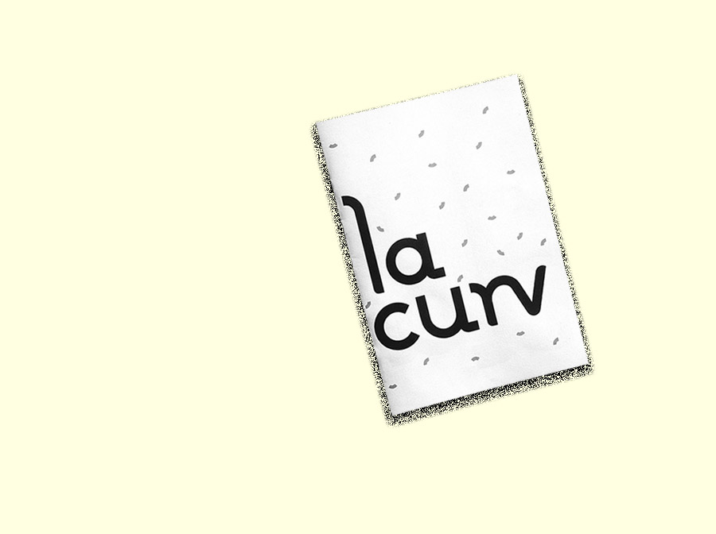
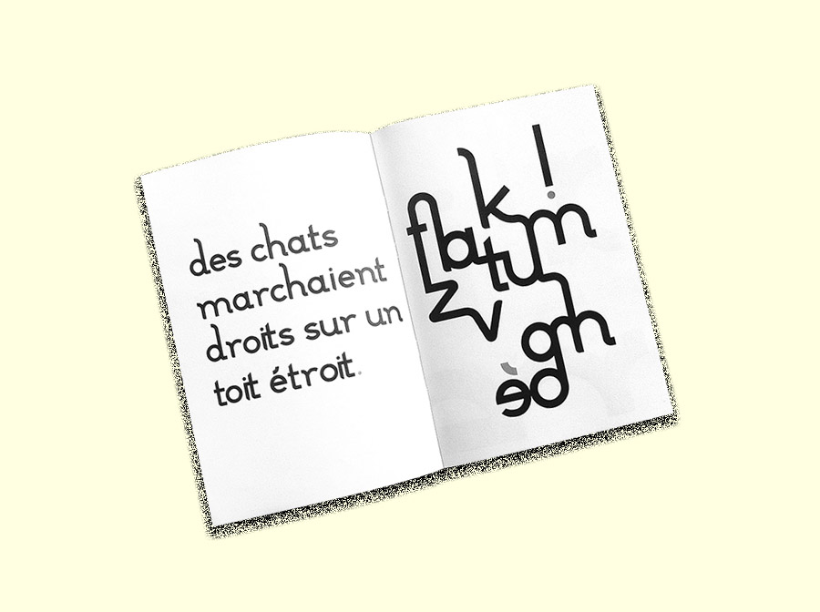
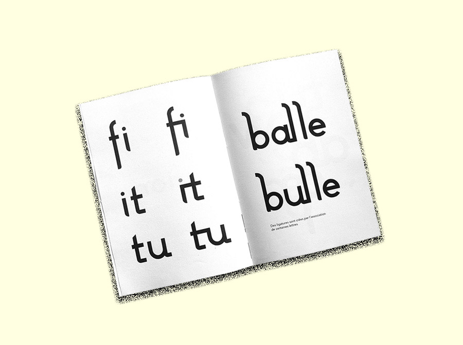
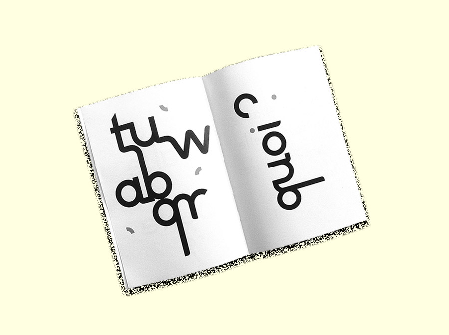
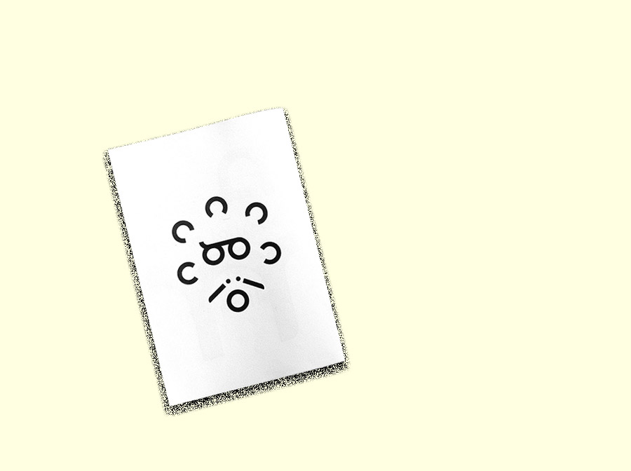

the curv
I made this sans serif font for short sentences like mantras and mottos.
It is mainly based on curves.
Thanks to them, "curv" have
a young, fresh and dynamic look.
Some serif allow the letters to unite
with each
other : ligatures are made.
January, 2017